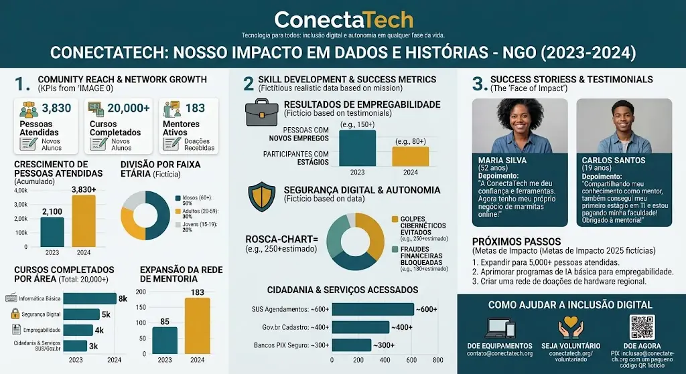

Serviços públicos digitais
Orientações para utilizar serviços como Meu SUS e Gov.br.
Conheça os projetos sobre serviços digitais
A ConectaTech é uma organização da sociedade civil estruturada sob o princípio de que a tecnologia deve ser um vetor de inclusão e autonomia em qualquer fase da vida. Ao unir as duas pontas da pirâmide geracional — jovens em busca de futuro profissional e idosos demandando cidadania digital —, o projeto rompe barreiras tecnológicas e constrói uma ponte de solidariedade intergeracional dentro das comunidades.
Quero me inscreverPara a juventude (15 a 19 anos), o projeto atua como acelerador de oportunidades no mercado de tecnologia. Jovens de baixa renda têm acesso a trilhas de informática, formação pré-profissional, oficinas comportamentais e mentorias de carreira com especialistas. Mais do que consumidores de redes sociais, tornam-se criadores de soluções, conquistam seus primeiros estágios formais em empresas parceiras e encontram na TI o sustento para ingressar no ensino superior e quebrar ciclos de vulnerabilidade econômica.
Com metade de seu público composto por pessoas com mais de 60 anos, a ConectaTech combate o analfabetismo digital tardio e o isolamento dos idosos frente à digitalização acelerada da sociedade. As oficinas práticas ensinam:
Independência em Serviços Públicos: Navegação autônoma pelo aplicativo Meu SUS (agendamentos de consultas e remédios) e plataforma Gov.br.
Segurança Financeira: Uso consciente e seguro do PIX e aplicativos de banco, com foco preventivo para identificar fraudes, links falsos (phishing) e golpes direcionados a pensionistas.
Conexão e Bem-Estar: Manejo de smartphones e redes sociais para fortalecer laços familiares, combater a solidão e preservar a autoestima.
O diferencial metodológico da ConectaTech está na mentoria cruzada: os próprios jovens atendidos exercem o papel de monitores e voluntários no letramento dos idosos. Essa dinâmica desenvolve empatia, paciência e liderança nos estudantes, ao mesmo tempo em que oferece acolhimento humanizado aos alunos seniores, provando que o aprendizado tecnológico não tem idade limite.
A ConectaTech transforma telas em instrumentos práticos de dignidade humana — seja abrindo as portas do primeiro emprego para um jovem, seja garantindo a tranquilidade e a cidadania plena de um idoso.
O mercado de tecnologia enfrenta um déficit contínuo de profissionais qualificados, enquanto jovens de comunidades e escolas públicas lidam com falta de equipamentos, conectividade instável e ausência de redes de contato profissionais (networking). O projeto atua nessa intersecção, convertendo barreiras de acesso em rotas sustentáveis de mobilidade social e geração de renda.
Missão: Democratizar o domínio de tecnologias críticas e preparar talentos sub-representados para atuar com autonomia no mercado digital.
Visão: Consolidar-se como uma metodologia escalável de inclusão produtiva, empregabilidade e inovação social orientada pela tecnologia.
Valores: Equidade, protagonismo comunitário, ética digital, sustentabilidade e colaboração intersetorial.
Aprendizagem Baseada em Projetos (PBL): Trilhas formativas hands-on em desenvolvimento web, análise de dados, design de interfaces e ferramentas de inteligência artificial aplicada, com foco na resolução de problemas reais da comunidade.
Economia Circular e Hardware: Captação de equipamentos obsoletos de empresas parceiras, recondicionamento técnico de máquinas e doação para viabilizar laboratórios comunitários e estudos individuais.
Mentoria e Empregabilidade: Conexão com profissionais voluntários do ecossistema de tecnologia para desenvolvimento de competências técnicas e socioemocionais (soft skills), além de integração direta com processos seletivos.
ODS 4 (Educação de Qualidade): Garantia de letramento digital prático e qualificação técnica alinhada às exigências contemporâneas.
ODS 8 (Trabalho Decente e Crescimento Econômico): Ampliação do índice de empregabilidade e estímulo à renda qualificada em setores de alto valor agregado.
ODS 10 (Redução das Desigualdades): Redução das assimetrias de oportunidade entre centros urbanos consolidados e áreas periféricas.

A ConectaTech opera sob a premissa de que a inclusão digital e a autonomia tecnológica são direitos fundamentais em qualquer fase da vida. Entre 2023 e 2024, a organização expandiu sua atuação para além da qualificação técnica tradicional, consolidando-se como um polo de letramento digital, cidadania e inserção econômica para perfis multigeracionais.
| Eixo / Indicador | Métricas Consolidadas (2023–2024) | Aplicação e Significado Prático |
|---|---|---|
| Alcance Comunitário | 3.830+ pessoas atendidas | Crescimento expressivo em relação a 2023 (2.100 alunos), consolidando a expansão da base atendida. |
| Volume de Formação | 20.000+ cursos completados | Média superior a 5 certificações por estudante nas trilhas de informática, cidadania e segurança. |
| Rede de Apoio | 183 mentores ativos | Crescimento de mais de 115% no corpo de voluntários em relação ao ano anterior (85 mentores). |
| Autonomia & Segurança | 250+ golpes cibernéticos evitados 180+ fraudes financeiras bloqueadas |
Intervenção direta contra engenharia social e golpes direcionados a aposentados e famílias vulneráveis. |
| Acesso a Direitos | ~600 agendamentos no SUS ~400 cadastros Gov.br ~300 utilizações seguras de PIX |
Resgate da autonomia cidadã e desburocratização no acesso a direitos sociais básicos. |
| Inserção Produtiva | 150+ novos empregos 80+ estágios conquistados |
Inserção produtiva tanto na formalização de negócios periféricos quanto no setor corporativo de TI. |
Idosos (60+ anos) — 50%: Representam a maior fatia do público da ONG, demandando principalmente segurança contra fraudes bancárias e inclusão no ecossistema de smartphones.
Adultos (20 a 59 anos) — 30%: Foco no uso da tecnologia para sobrevivência e crescimento econômico, com destaque para a digitalização de microempresas locais.
Jovens (15 a 19 anos) — 20%: Preparação técnica para entrada no mercado de trabalho e inserção no setor de tecnologia.
Maria Silva (52 anos): Utilizou os conhecimentos de ferramentas digitais e gestão online para profissionalizar sua produção e venda de refeições, criando um negócio de marmitas online com renda regular.
Carlos Santos (19 anos): Atuou como mentor jovem auxiliando outras faixas etárias, desenvolveu competências socioemocionais e conquistou seu primeiro estágio na área de TI, custeando seus estudos universitários.
Meta de expansão para atingir 5.000 pessoas atendidas.
Inclusão de disciplinas de Inteligência Artificial básica voltadas à produtividade e busca de emprego.
Estruturação de uma rede regional de doação e recondicionamento de computadores para equipar laboratórios comunitários.
Conheça os temas trabalhados nas oficinas de inclusão digital.
Orientações para utilizar serviços como Meu SUS e Gov.br.
Conheça os projetos sobre serviços digitaisAprenda a reconhecer links falsos e golpes ao usar serviços bancários.
Conheça os projetos sobre segurança digitalUso de smartphones e redes sociais para manter contato com familiares.
Conheça os projetos sobre conexão digital